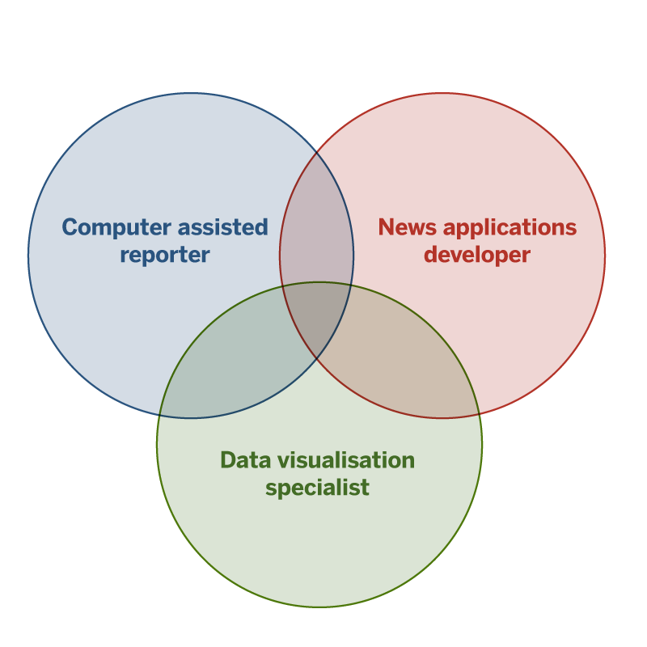
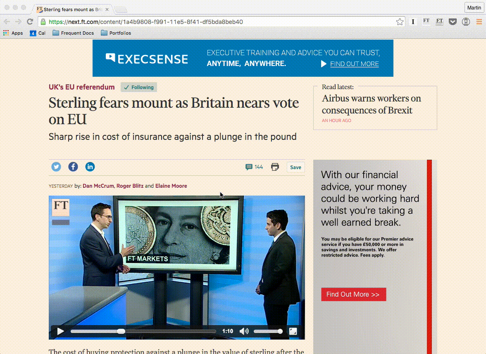
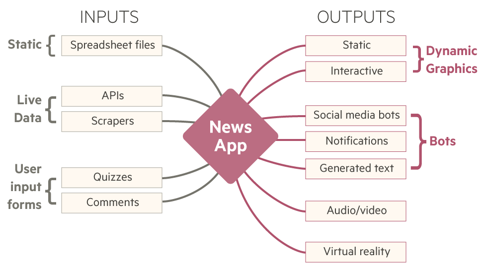
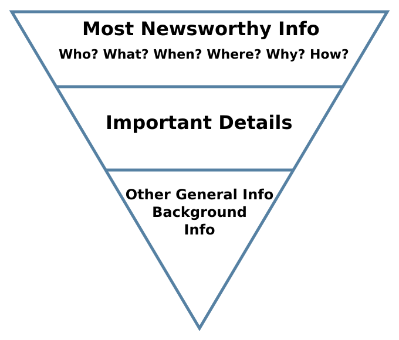
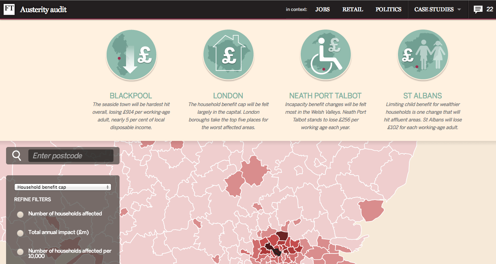
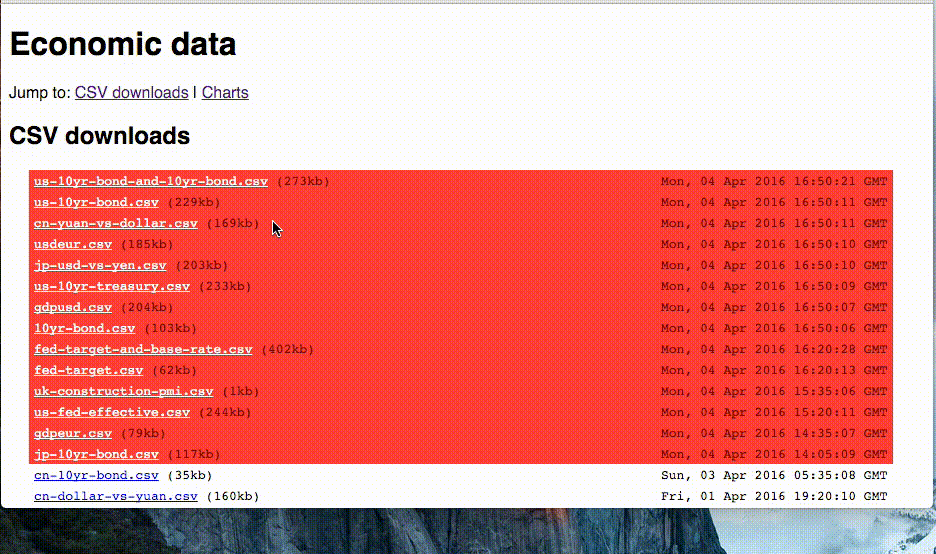

- Editors and engineers at the FT
- Commissioning Commandments
- Interactive Narratives
- Current Trends
Editors & Engineers at the FT
Two newsroom tech teams
| Interactive News Reader-facing content |
Editorial Technology Internal newsroom tools |
|---|---|
| 5 developer-journalists | 14 developers |
| 5 interaction designers | 3 testers, 2 tech lead/architect |
| 5 data journalists | 1 Product manager & 2 BAs |
Editorial Technology
- Focus on journalist-facing tools
- Product management & engineering team structure
Lantern

Nightingale
Interactive News
- Focus on public-facing content
- Close ties to graphics and statistics teams
- Developers seconded from Technology dept
- Developer/journalist distinction is blurring
Sources:
‘News apps’: What works
Commissioning commandments
- Tell a story
- Using data integral to the reporting
- That cannot be told a simpler way
- That is of lasting value
- Involved specialist journalists from the start
Interactive Narratives
Interactive story-telling: Some theory
An interactive news application should meet a clearly-stated user need and explain a topic with a narrative structure, not just display data for the reader to explore.
Properties of visual narrative types
| Author-driven | Reader-driven |
|---|---|
| Linear ordering of scenes | No prescribed ordering |
| Heavy messaging | No messaging |
| No interactivity | Free interactivity |
Edward Segel and Jeffrey Heer, “Narrative Visualization: Telling Stories with Data”
Author-driven (explanatory)
Very prescriptive selection and ordering. Often used to tell stories.
- text
- video
- comics
- this slide deck.
Sounds familiar?
Source: Wikipedia
Reader-driven (exploratory)
Large volumes of information, minimal prioritisation. Often used to discover patterns.
- dashboards
- data art
Martini-Glass narrative
“... begins with an author-driven approach [such as an] interesting default view or annotations. Once the author’s intended narrative is complete, the visualization opens up to a reader-driven stage where the user is free to interactively explore the data.
The structure resembles a martini glass, with the stem representing the single-path author-driven narrative and the widening mouth of the glass representing the available paths made possible through reader-driven interactivity.”
Source: Edward Segel and Jeffrey Heer, “Narrative Visualization: Telling Stories with Data”
Shneiderman’s mantra
“Overview first, zoom and filter, then details-on-demand”
Source: Ben Shneiderman, “The Eyes Have It: A Task by Data Type Taxonomy for Information Visualizations”. Proceedings of the IEEE Symposium on Visual Languages, 336-343, 1996.
Explanatory and exploratory
Source: Financial Times
The ‘martini-glass’ narrative
Highlight the important views before handing over control.
Current trends
- Convergence of print and online graphics workflows
- Mobile: Higher barriers to interactivity
- Distributed content: More static pages
- Automation: Not just text generation and bots
BOOM BOOM BOOM@archietse dropping knowledge bombs at #malofiej24. pic.twitter.com/tW6qMavLem
— Brian Boyer (@brianboyer) March 11, 2016
Source: Nieman Lab, At Malofiej, “the best form of storytelling is often static”
Predictive selection
Graphics workflow convergence

Macro and micro
Source: Financial Times
Live election results
Highlighting personal relevancy
The best kind of ‘micro’ view is personalisation.

News games

